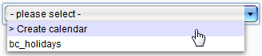
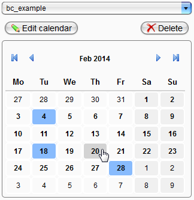
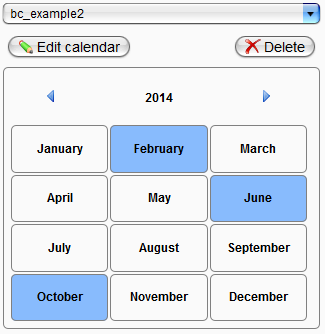
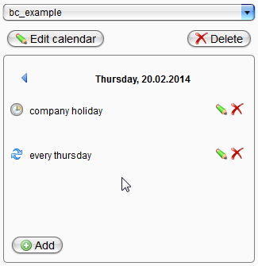
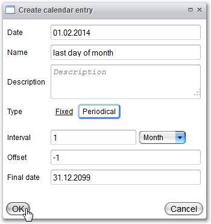

Business Calendar

Topic content
Generally, the function business calendar offers the possibility to maintain different calendars with unique or recurrent appointments and to use them for the temporal activation and deactivation of alert rules in the alert system.
After selection of the business calendar menu entry in the navigation bar a drop down menu appears where you can select an existing calendar for viewing or create a new one. For creation it is only necessary to enter a unique name and optionally a description text.

After selection of an existing calendar or creation of a new one, the standard view appears. In the upper area, this view contains buttons for changing and deleting the whole calendar. Use the arrow keys to navigate monthly or yearly frontwards and backwards. Days with appointments deposited or that match periodical entries are colored. For calendars with few entries it is recommended to use the yearly overview which can be opened by clicking on the month.

Months with existing calendar entries are colored in the yearly overview analogous to the monthly overview. The particular monthly overview can be opened by clicking on the name of the month.

A single day contains a list view of all its entries. On the right side each entry has options to show/edit (marked with a pen) and to delete (marked with a red "X") it.

On the bottom you can find a button for adding a new calendar entry. Clicking on it opens an empty "Create calendar entry" dialog.

While creating/changing a calendar entry, in the upper area you have to provide general information for the entry, whereby the description is optional. The type declaration decides whether the appointment appears unique or periodically in the calendar.
If the periodical type is selected, the lower part of the dialog is activated. All fields have to be filled! The date in the upper part will be used as start date and the appointment will be entered in the calendar from this date on with the selected interval to the selected final date.
The field "Offset" indicates a shifting of the appointment to the entered number of days. The standard value is "0". It should only be used for declarations of the month ultimate. Like in the figure above, "-1" is used to mark the day before the first day of the month (and analogous for "-2" etc.).